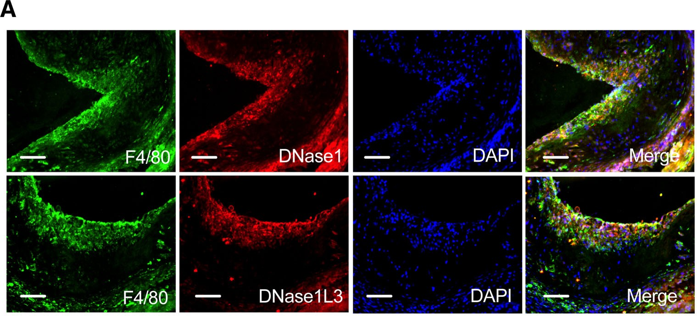
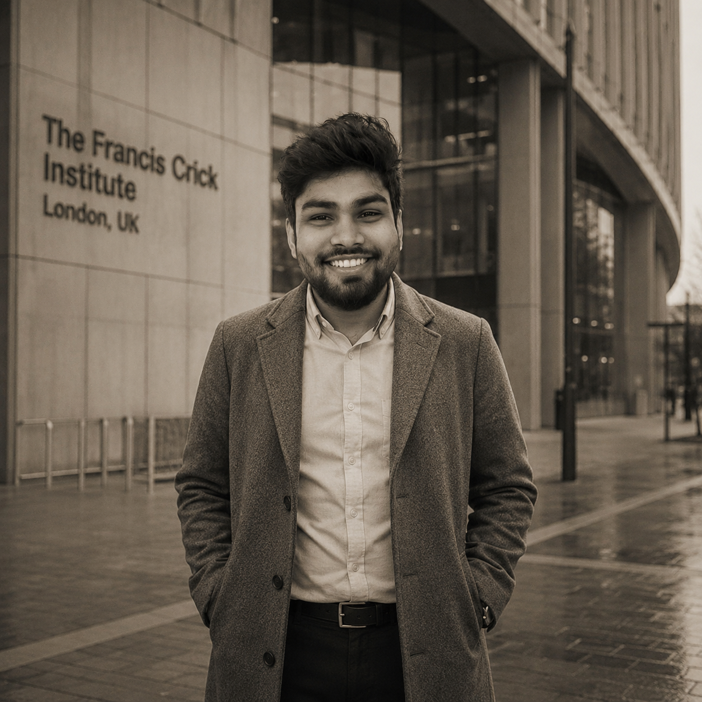
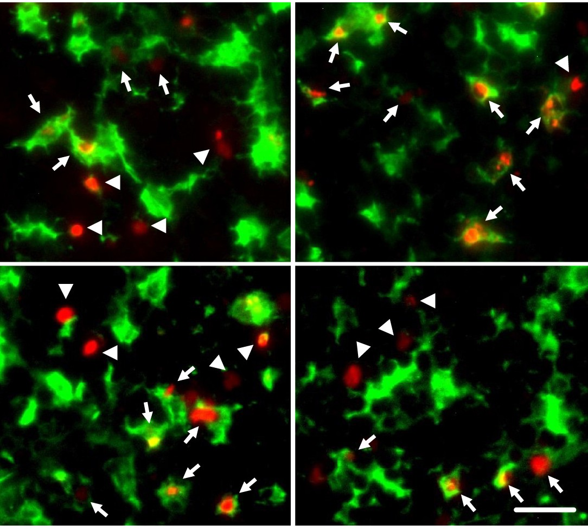
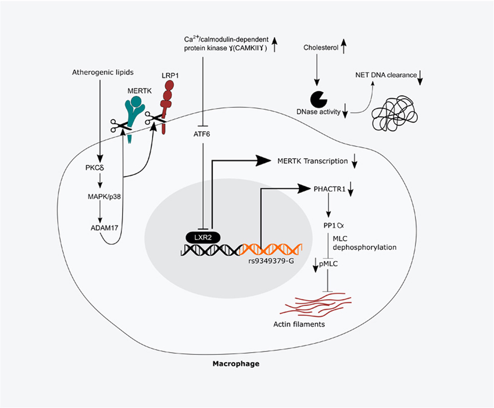
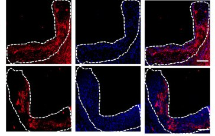
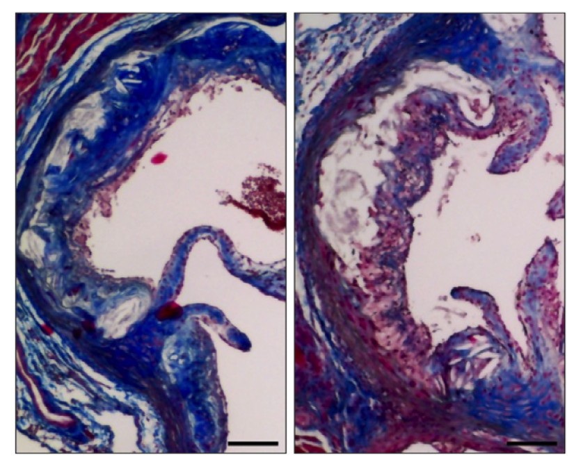
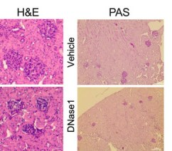
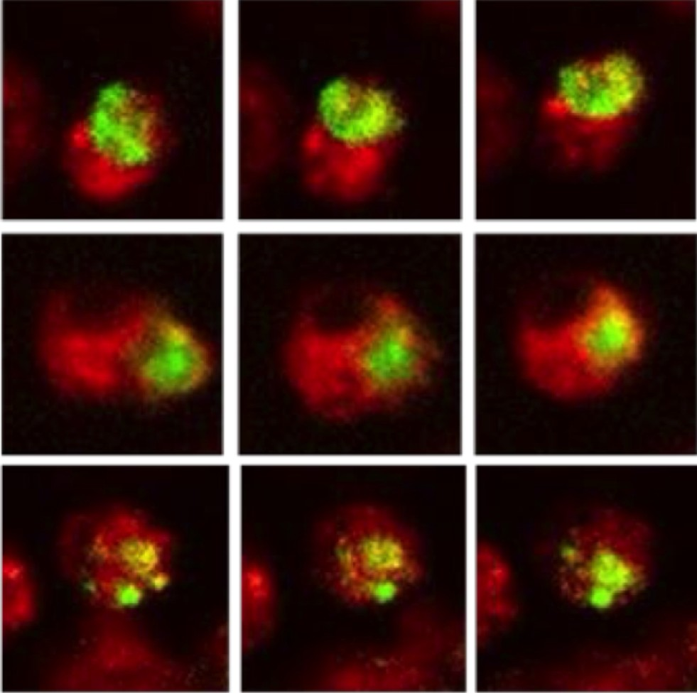
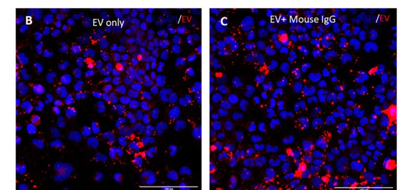
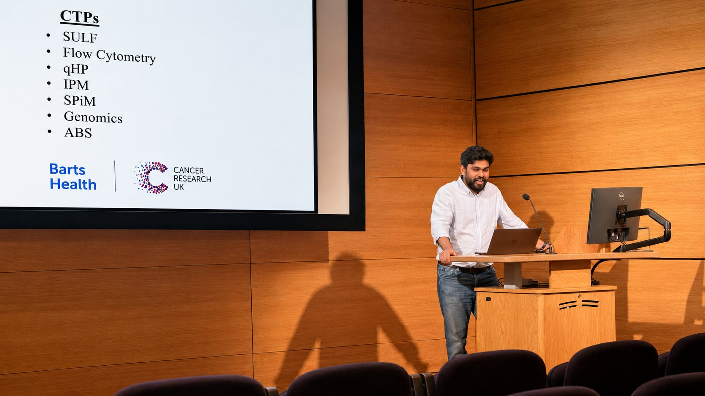

Hypercholesterolemia impairs clearance of neutrophil extracellular traps and promotes inflammation and atherosclerotic plaque progression
Arteriosclerosis, Thrombosis, and Vascular Biology · 41(10), 2021
63 Cited by
Immunology · Inflammation Resolution
Uncovering how the body switches off inflammation — across cardiovascular disease, lupus, and fungal immunity — to reveal new therapeutic opportunities.
Confocal microscopy — macrophages dismantling fungal hyphae · The Francis Crick Institute
Research Focus
How impaired clearance of dead cells and NETs drives atherosclerotic plaque progression.
Signalling programs and vesicles through which immune cells actively end inflammation.
Defective efferocytosis and immune dysregulation underlying systemic autoimmune disease.
How innate immunity senses fungal pathogens and tips toward protection or pathology.

Selected Work

Arteriosclerosis, Thrombosis, and Vascular Biology · 41(10), 2021

Cell Reports · 42(7), 2023

Pharmacological Research · 170, 2021

Frontiers in Pharmacology · 13, 2022
Figure adapted (cropped) from the article · CC BY 4.0

Circulation Research · 137(10), 2025

Journal of Cellular and Molecular Medicine · 26(20), 2022
Figure adapted (cropped) from the article · CC BY 4.0

Circulation Research · 137(12), 2025

International Journal of Molecular Sciences · 25(9), 2024
Figure adapted (cropped) from the article · CC BY 4.0
Research Statement
My research focuses on understanding the cellular and molecular mechanisms that govern inflammation resolution, with particular emphasis on macrophage biology, innate immunity, extracellular vesicles, and host–pathogen interactions. Through my doctoral and postdoctoral research at Queen Mary University of London and the Francis Crick Institute, I have investigated how defective clearance of extracellular debris—including neutrophil extracellular traps (NETs), apoptotic cells, and fungal pathogens—drives chronic inflammation and disease progression. My work combines mechanistic cell biology, immunology, advanced imaging, transcriptomics, animal models, and patient-derived samples to identify fundamental biological mechanisms with translational potential.
A major focus of my research has been understanding how NETs are cleared under physiological and pathological conditions. During my doctoral studies, I made the first discovery of a physiological NET-induced DNase response, demonstrating that hepatocytes and intestinal epithelial cells rapidly release DNase1 and DNase1L3 following NET formation to maintain extracellular DNA homeostasis. I further showed that hypercholesterolaemia suppresses this protective response through endoplasmic reticulum (ER) stress, leading to impaired NET clearance, sustained inflammation, and accelerated atherosclerosis progression (Arteriosclerosis, Thrombosis, and Vascular Biology; PMID: 34348488).
Building on these findings, I identified macrophages as the principal cellular mediators of NET clearance within tissues. My work demonstrated that macrophage-derived DNases are essential for degrading NETs at sites of chronic inflammation and that activation of the PERK signalling pathway suppresses DNase secretion under hypercholesterolaemic conditions. Furthermore, I showed that persistent NETs directly impair macrophage efferocytosis by inducing proteolytic cleavage of the apoptotic cell receptor MerTK, thereby establishing a mechanistic link between defective NET clearance, impaired inflammation resolution, and progression of advanced atherosclerosis (Circulation Research; PMID: 41031413).
These studies have established a comprehensive framework explaining how NETs are regulated both in the circulation and within tissues and have identified several potential therapeutic strategies aimed at restoring physiological NET clearance in chronic inflammatory diseases.
A central focus of my research has been understanding how macrophages sustain efficient clearance of apoptotic cells (efferocytosis), a fundamental process required for tissue homeostasis and inflammation resolution. Every day, billions of cells undergo apoptosis in the human body, placing an enormous burden on a relatively limited population of professional phagocytes. To maintain tissue homeostasis, individual macrophages must sequentially engulf and degrade multiple apoptotic cells throughout their lifespan. Despite the physiological importance of this process, the cellular and metabolic mechanisms that enable macrophages to sustain prolonged phagocytic activity remain largely unknown.
To address this fundamental question, I investigated the metabolic mechanisms that enable macrophages to sustain prolonged efferocytosis. Using complementary cellular, molecular, metabolic, and advanced imaging approaches, I uncovered a previously unrecognised mechanism that supports sustained macrophage phagocytic function during inflammation resolution. These findings establish a new conceptual framework linking cellular metabolism with macrophage-mediated tissue homeostasis and have broad implications for understanding and therapeutically targeting chronic inflammatory diseases (manuscript in preparation).
In parallel, I demonstrated that efferocytosis stimulates macrophages to release extracellular vesicles (EVs) that actively enhance subsequent apoptotic cell clearance while simultaneously suppressing inflammatory responses. This work identified a previously unrecognised mechanism of intercellular communication during inflammation resolution and established extracellular vesicles as endogenous pro-resolving mediators with significant therapeutic potential for chronic inflammatory diseases. These findings demonstrate that macrophages not only remove dying cells but also actively coordinate tissue repair through EV-mediated signalling, thereby amplifying inflammation resolution (Cell Reports; PMID: 37436891).
To facilitate therapeutic discovery, I established a high-throughput phenotypic screening platform encompassing more than 5,000 FDA-approved and bioactive compounds to identify small molecules capable of enhancing macrophage efferocytosis. This work identified several promising therapeutic candidates and highlights the potential of drug repurposing approaches to restore defective inflammation resolution in cardiovascular and other chronic inflammatory diseases (manuscript in preparation).
Collectively, these studies advance our understanding of the cellular, metabolic, and intercellular mechanisms that govern macrophage-mediated inflammation resolution. By integrating fundamental mechanistic discovery with translational therapeutic approaches, my research provides new conceptual and therapeutic frameworks for enhancing tissue repair and restoring immune homeostasis across a broad spectrum of chronic inflammatory diseases.
During my current postdoctoral research at the Francis Crick Institute, my research has expanded to investigate the fundamental mechanisms by which macrophages coordinate host defence against extracellular fungal pathogens. My work seeks to understand how innate immune cells process complex microbial material following pathogen neutralisation and how these processes shape inflammation resolution, tissue repair, and long-term immune homeostasis.
Building on this work, my current research programme explores how defects in pathogen processing contribute to chronic inflammatory disease. By integrating advanced imaging, cellular immunology, molecular biology, and translational approaches, I aim to define the cellular and molecular mechanisms that maintain immune homeostasis and to identify new therapeutic opportunities for inflammatory and infectious diseases.
Current Work
This research investigates the mechanisms by which the immune system restores tissue homeostasis following fungal infection. By examining how innate immune cells coordinate the clearance of persistent inflammatory material and promote tissue recovery, this work seeks to redefine the final stages of host defence beyond pathogen elimination.
This project explores the fundamental cellular adaptations that enable immune cells to sustain inflammatory debris clearance during tissue injury. Particular emphasis is placed on understanding how cellular metabolism supports immune function and contributes to efficient inflammation resolution.
This programme focuses on identifying therapeutic approaches that enhance the body's endogenous mechanisms of inflammation resolution. Through high-throughput discovery strategies, we aim to establish new opportunities for promoting tissue repair across chronic inflammatory diseases.
Looking Ahead
The long-term vision of my future research programme will be to understand how the immune system restores tissue homeostasis following infection and tissue injury. While remarkable progress has been made in defining the mechanisms by which pathogens are recognised and eliminated, the biological processes that actively terminate inflammation and re-establish tissue integrity remain comparatively unexplored.
My future laboratory will investigate the fundamental cellular and molecular mechanisms that orchestrate inflammation resolution, with particular emphasis on the coordinated removal of inflammatory debris and the restoration of tissue function. By integrating approaches in immunology, cell biology, infection biology, and inflammation research, we will seek to uncover the conserved principles that enable tissues to transition from immune defence to repair and long-term homeostasis.
A central objective of the programme will be to understand how disruption of these endogenous resolution pathways contributes to persistent inflammation and the development of chronic inflammatory diseases. Through the discovery of fundamental mechanisms governing tissue recovery, my future laboratory will aim to establish new conceptual frameworks for inflammation resolution and lay the foundation for therapeutic strategies that restore tissue homeostasis by enhancing the body's intrinsic repair mechanisms.
Ultimately, my ambition is to establish an internationally recognised research programme that bridges fundamental immunology with translational medicine, advancing our understanding of how inflammation is naturally resolved and how these processes can be harnessed to improve human health.
About
Dr. Umesh Kumar Dhawan was born in Dausa, Rajasthan (India), and raised in the small rural village of Rampura Khurd with limited access to education. He studied at the local government school until the fifth standard, travelled daily to a neighbouring village to continue through the eighth standard, and later moved to Dausa city to complete his secondary education.
These early challenges shaped his resilience, discipline, and belief in the transformative power of education. Fascinated by biology, he pursued a Bachelor's degree in Biotechnology at the University of Rajasthan, followed by a Master's degree in Biotechnology at the University of Allahabad after qualifying the Combined Biotechnology Entrance Examination (CEEB). His postgraduate education was supported by a fellowship from the Department of Biotechnology (DBT), Government of India.
He later qualified the CSIR-UGC NET, DBT-Junior Research Fellowship (DBT-JRF), and GATE examinations and began his doctoral research at CSIR-Institute of Genomics and Integrative Biology (CSIR-IGIB), New Delhi, under the supervision of Dr. Manikandan Subramanian. He was subsequently awarded the prestigious Queen Mary University of London Principal's Studentship, enabling him to continue his Ph.D. research at the William Harvey Research Institute, where he earned a Ph.D. in Cardiovascular Medicine. He then completed postdoctoral training at Queen Mary University of London before joining the Francis Crick Institute, London, as a Postdoctoral Fellow.
Dr. Dhawan's research focuses on understanding how the immune system resolves inflammation and maintains tissue homeostasis. His discoveries have revealed fundamental mechanisms governing the clearance of neutrophil extracellular traps (NETs), apoptotic cells, and fungal pathogens, providing new insights into macrophage biology, inflammation resolution, and chronic inflammatory diseases.
From a small village in Rajasthan to one of the world's leading biomedical research institutes, his journey reflects the power of perseverance, scientific curiosity, and opportunity. His long-term vision is to establish an internationally recognised research programme in India dedicated to understanding inflammation resolution and immune homeostasis while mentoring the next generation of scientists, particularly those from rural and underrepresented communities.
His story carries a simple message: where you begin does not define how far you can go.
Contact
Interested in collaboration, a talk, or a question about the research? Send a message below, or reach me directly.

Sharing our research at scientific meetings & conferences.